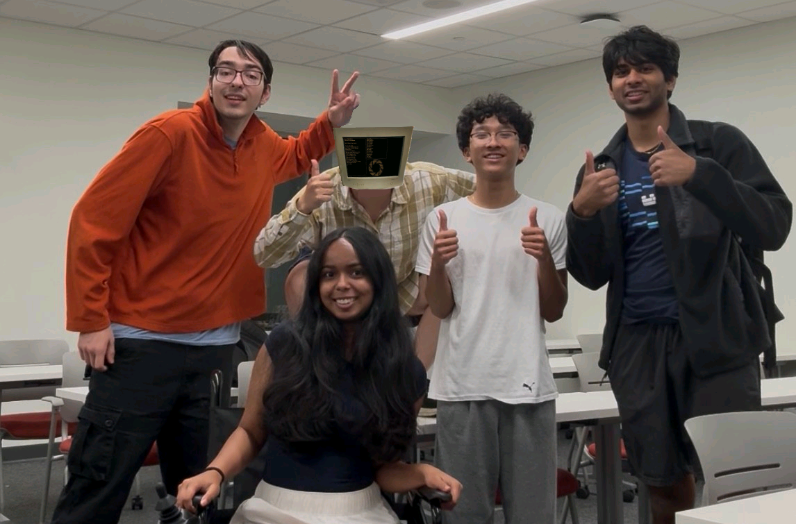

We are building an add-on for electric wheelchairs that translates imagined motion (motor imagery) into movement
By developing an add-on that can sit on top of most electric wheelchair joysticks instead of working with direct wiring of a specific wheelchair model, we aim to make our solution more accessible and customizable.
Learn more about our research on our EEG‑wheelchair page.
Meet the team members driving these efforts on our team page.